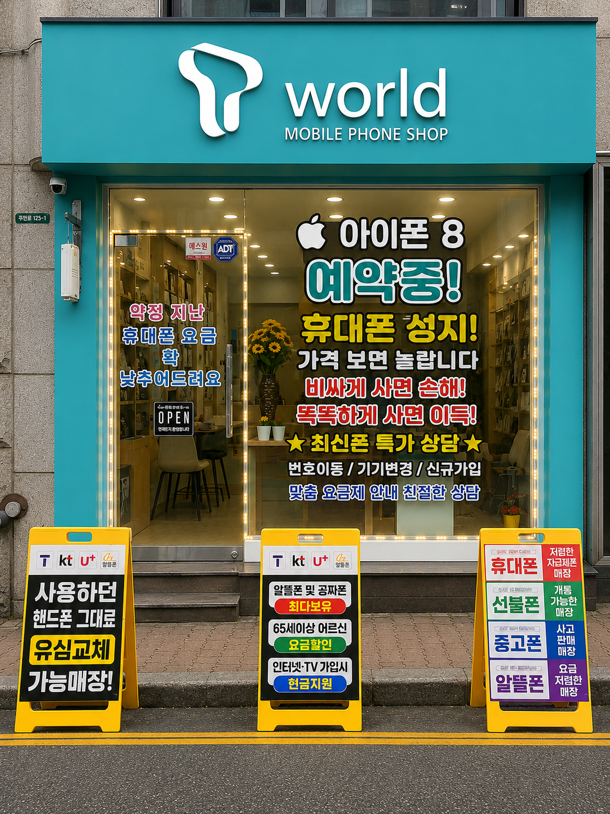

복잡한 휴대폰 가격과 통신요금, 이해하기 쉽게 안내해드립니다.
기기변경 · 번호이동 · 신규가입 · 인터넷 · TV 상담
온라인에서 확인하고, 실제 매장에서 직접 상담받으세요.

필요한 내용부터 차근차근 확인해드립니다.
기기변경, 번호이동, 신규가입 등 고객 상황에 맞춰 상담해드립니다.
약정이 지났거나 현재 요금이 부담된다면 이용 중인 조건부터 확인해보세요.
신규가입과 변경, 휴대폰 결합 등 인터넷·TV 관련 상담을 도와드립니다.
휴대폰은 가입할 때뿐 아니라 사용하면서도 상담이 필요한 경우가 많습니다.
YN텔레콤은 주안동 한자리에서 14년간 운영해 온 오프라인 매장으로,
구매 전 궁금한 내용을 편하게 문의하실 수 있습니다.
조건이 복잡하게 느껴지신다면 전화로 먼저 문의하세요.